OpenProject
01. Liste des lots de travaux
Ouverture de la liste publique des lots de travaux du projet OpenProject.
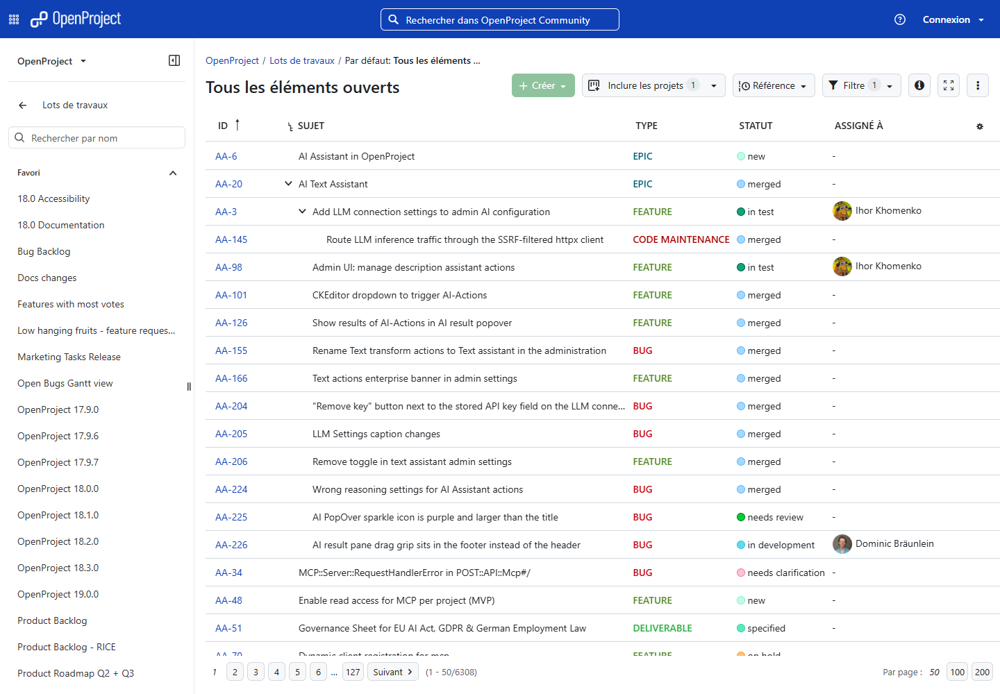
Limites de la preuve
- Instance communautaire officielle, données publiées par le projet, lecture anonyme.
- Aucune modification, aucune connexion, pas de preuve du module courriels de production.
02. Liste et fiche latérale
Liste → ouverture de la fiche AI Assistant in OpenProject, sans modification.
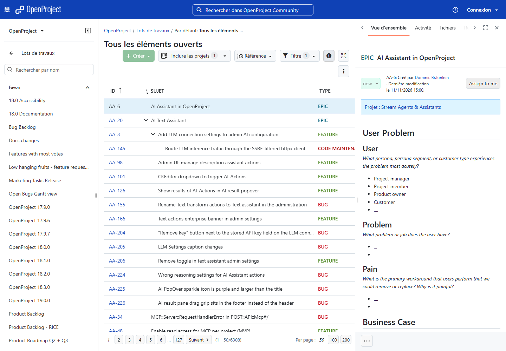
Limites de la preuve
- Instance communautaire officielle, données publiées par le projet, lecture anonyme.
- Aucune modification, aucune connexion, pas de preuve du module courriels de production.
03. La fiche occupe le mobile
Même fiche publique au viewport 390×844.
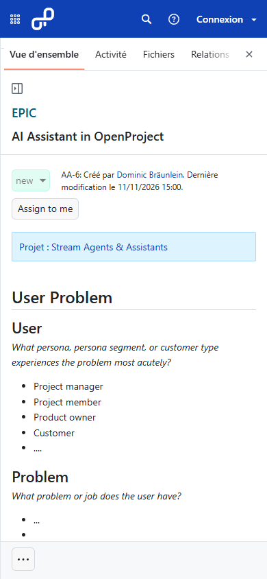
Limites de la preuve
- Instance communautaire officielle, données publiées par le projet, lecture anonyme.
- Aucune modification, aucune connexion, pas de preuve du module courriels de production.
09. Un tableau public par statut
Lien Tableaux → Aktionsboard (Status), lecture anonyme ; nouvelle attente du chargement des colonnes.
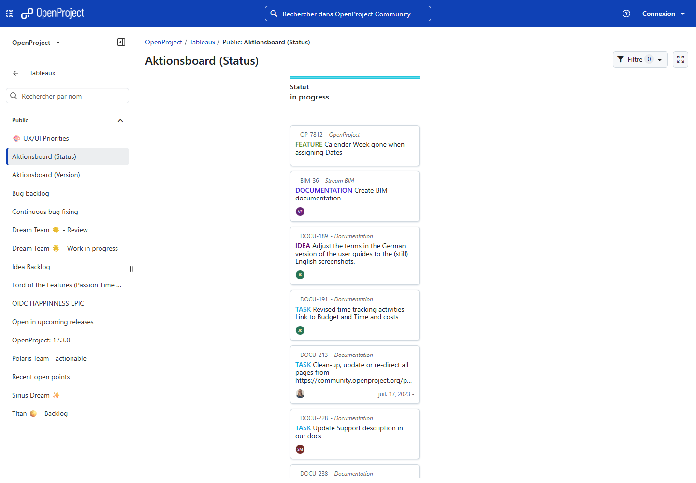
Limites de la preuve
- Aucune modification ni session personnelle.
- Tableau observé sur une instance communautaire officielle, pas une recette de notre kanban.
13. Lien de tâche dans un document
Aucune interaction produit ; capture du guide officiel.
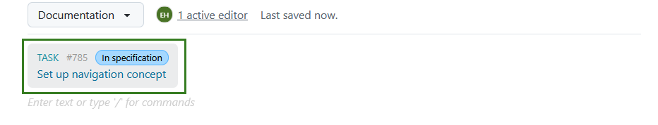
Limites de la preuve
- Image publiée par l’éditeur ; fonctionnalité Documents non parcourue dans l’instance publique.
- La documentation indique une absence de versioning des documents ; ne prouve pas notre contexte versionné.
14. Document complet avec pièces jointes
Aucune interaction produit ; capture du guide officiel.
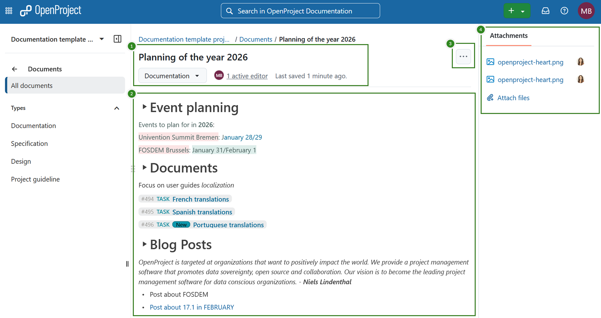
Limites de la preuve
- Image choisie et annotée par l’éditeur ; pas une capture live de notre parcours.
- Ne démontre pas notre versioning, nos permissions ni une GED réglementaire.
Odoo
04. Les projets en cartes
Accueil de démonstration → application Project (navigation en lecture).
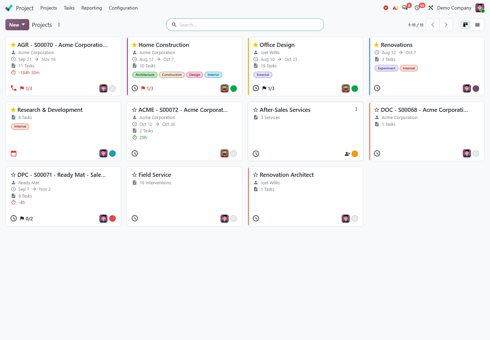
Limites de la preuve
- Démonstration éditeur, données fictives, aucune modification volontaire de fiche.
- Édition/licence et intégration courriel de production non vérifiées.
05. Tâches du projet en kanban
Ouverture du premier projet de démonstration depuis sa carte.
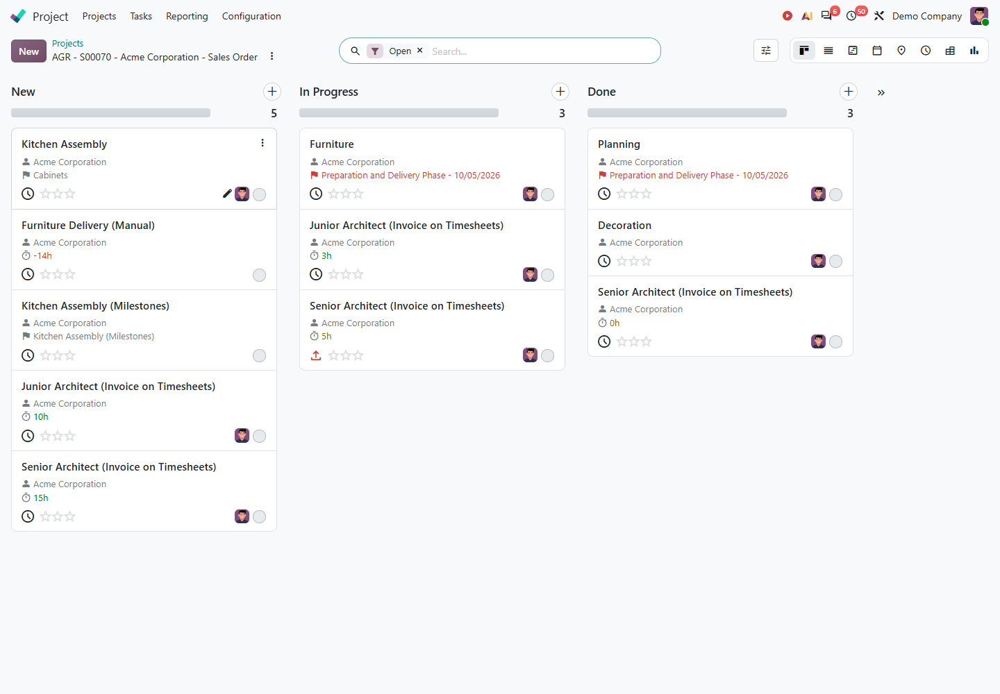
Limites de la preuve
- Démonstration éditeur, données fictives, aucune modification volontaire de fiche.
- Édition/licence et intégration courriel de production non vérifiées.
06. Fiche tâche et fil de courriels
Ouverture de la première tâche du kanban ; lecture de ses propriétés et de son fil d’activité.
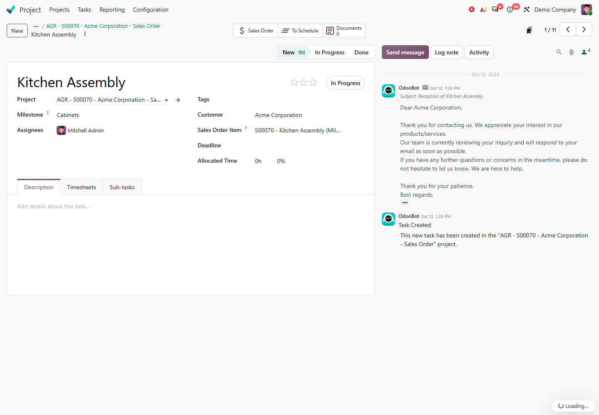
Limites de la preuve
- Démonstration éditeur, données fictives, aucune modification volontaire de fiche.
- Édition/licence et intégration courriel de production non vérifiées.
07. Même tâche sur mobile
Même tâche publique au viewport 390×844 ; aucune édition.
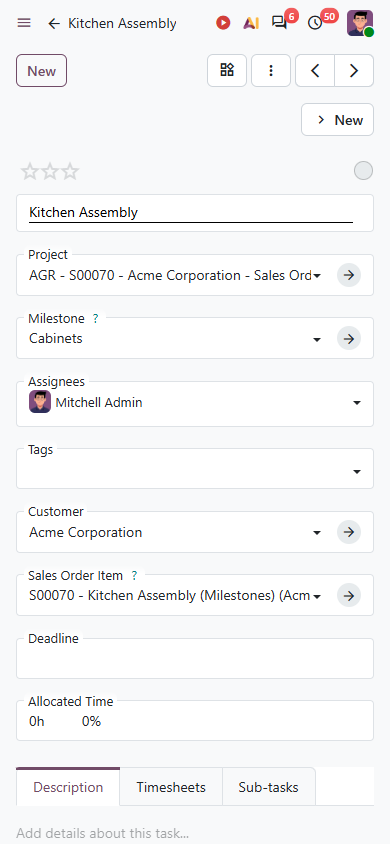
Limites de la preuve
- Démonstration éditeur, données fictives, aucune modification volontaire de fiche.
- Édition/licence et intégration courriel de production non vérifiées.
08. Documents, dossiers et contexte projet
Navigation vers Documents dans la même session de démonstration, sans importer de fichier.
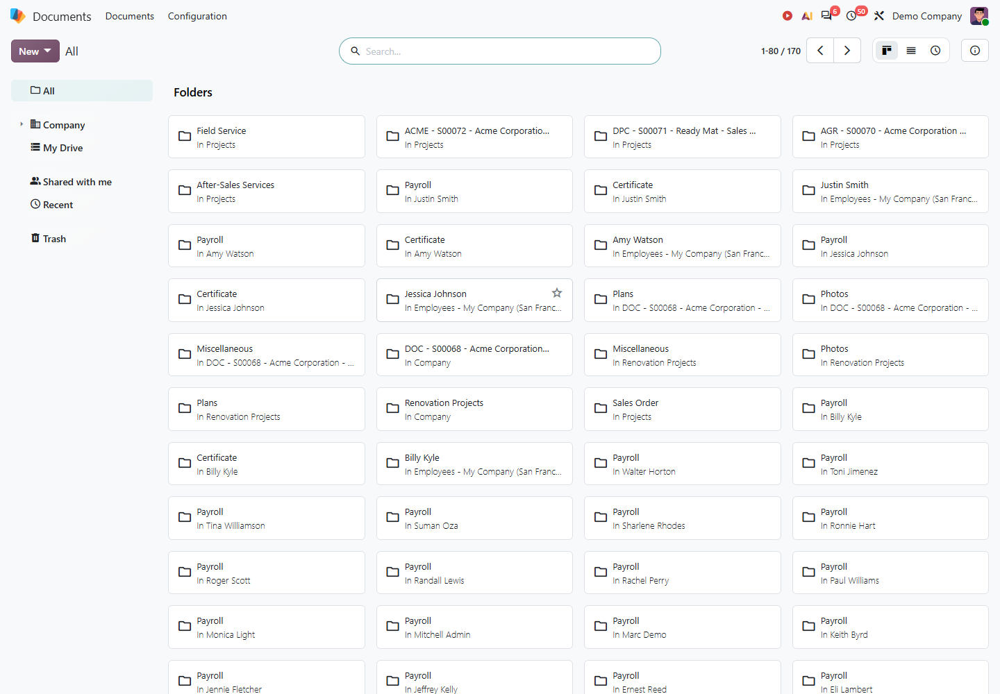
Limites de la preuve
- Démonstration éditeur, données fictives, aucune modification volontaire de fiche.
- Édition/licence et intégration courriel de production non vérifiées.
Notion
10. Projets et tâches dans le même workspace
Aucune interaction produit ; image liée par le guide officiel, récupérée en HTTP public.
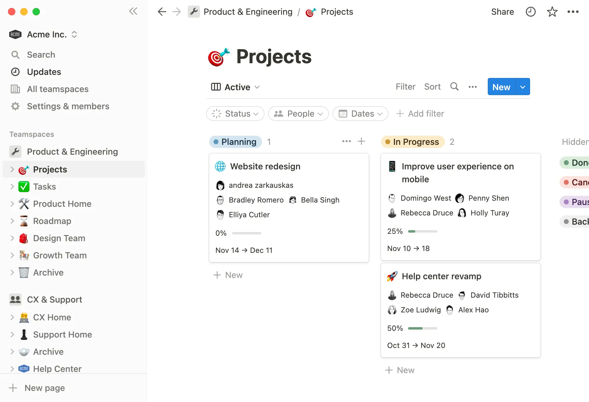
Limites de la preuve
- Capture sélectionnée par l’éditeur, version et viewport CSS non fournis.
- Ni parcours interactif Notion ni affichage mobile Notion vérifiés.
11. Configuration d’une disposition native
Aucune interaction produit ; image liée par le guide officiel, récupérée en HTTP public.

Limites de la preuve
- Capture sélectionnée par l’éditeur, version et viewport CSS non fournis.
- Ni parcours interactif Notion ni affichage mobile Notion vérifiés.
12. Vues d’une seule base
Aucune interaction produit ; image liée par le guide officiel, récupérée en HTTP public.

Limites de la preuve
- Capture sélectionnée par l’éditeur, version et viewport CSS non fournis.
- Ni parcours interactif Notion ni affichage mobile Notion vérifiés.